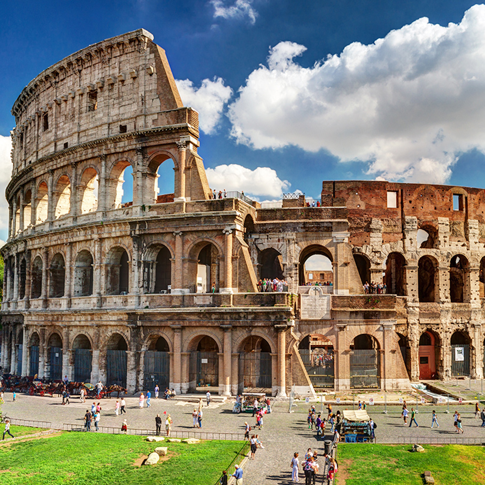
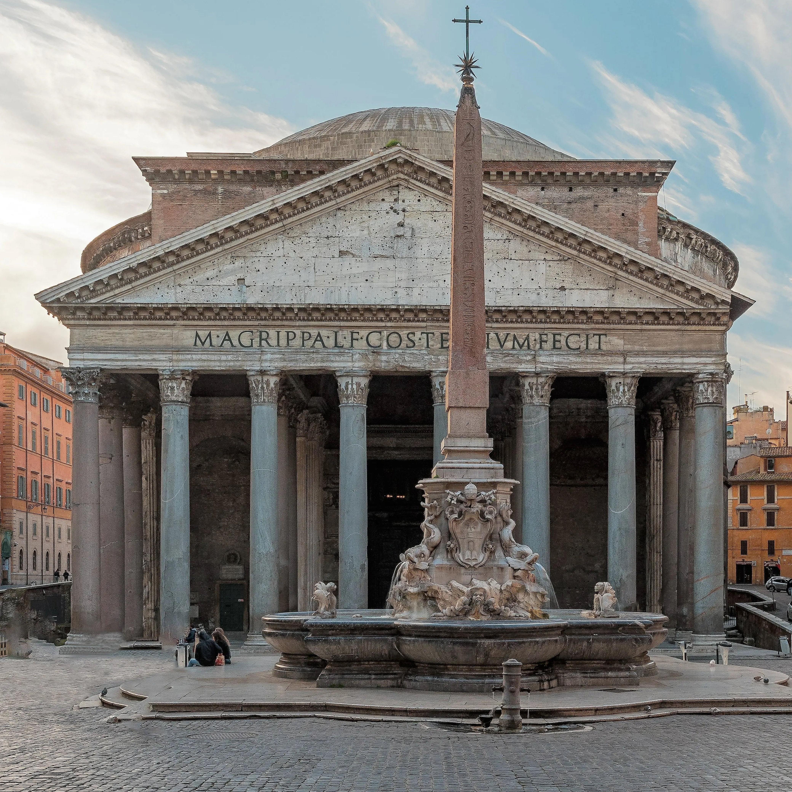
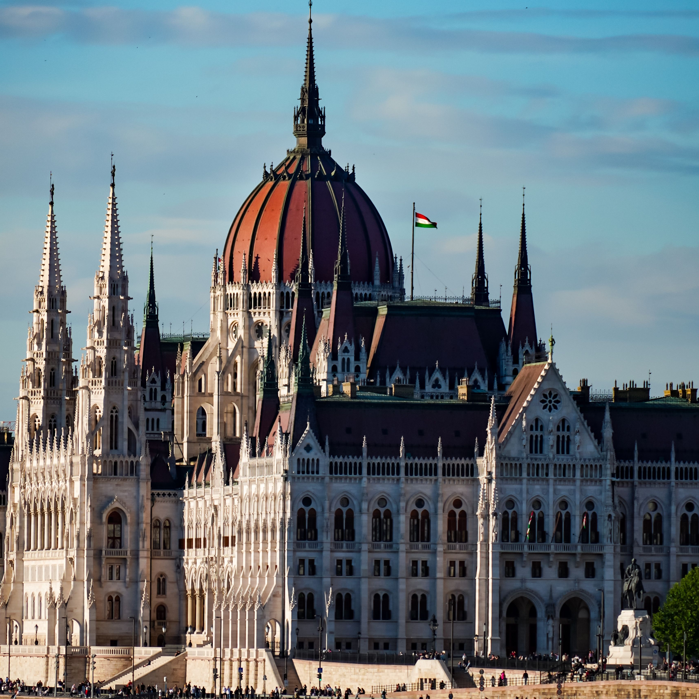
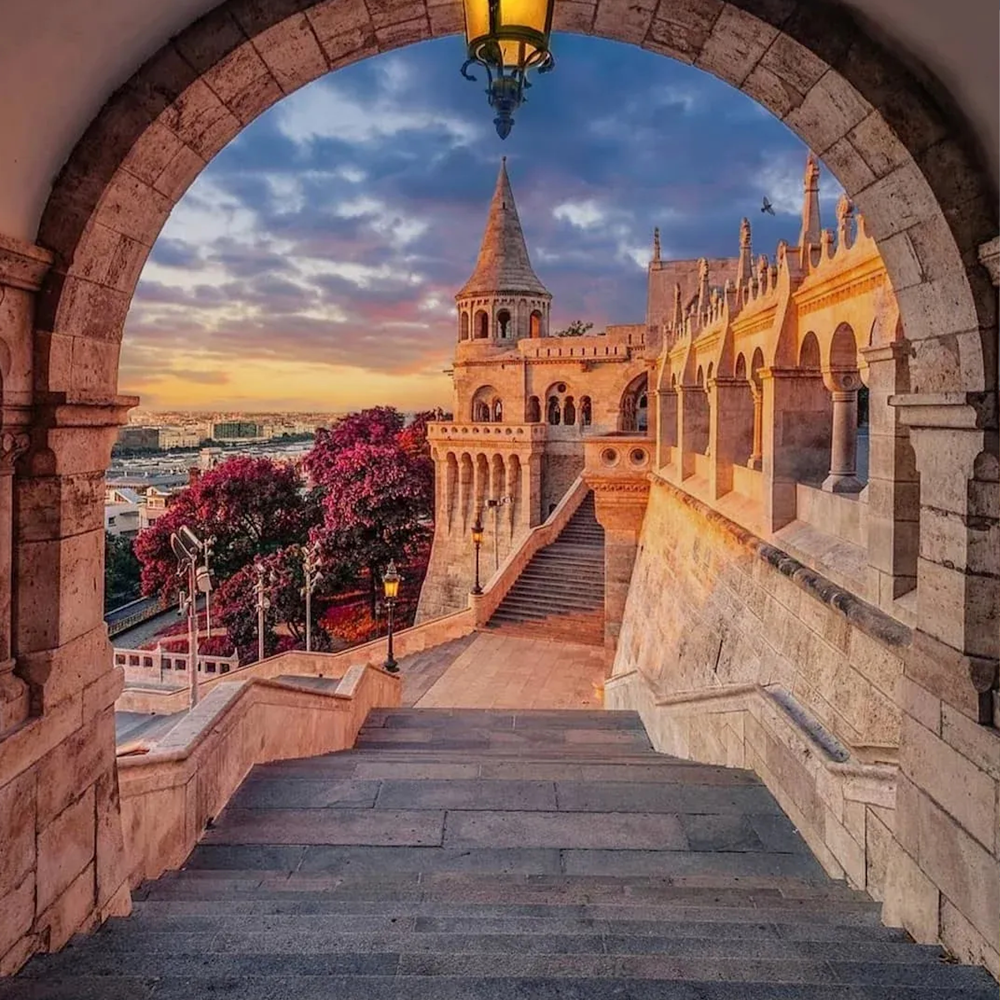
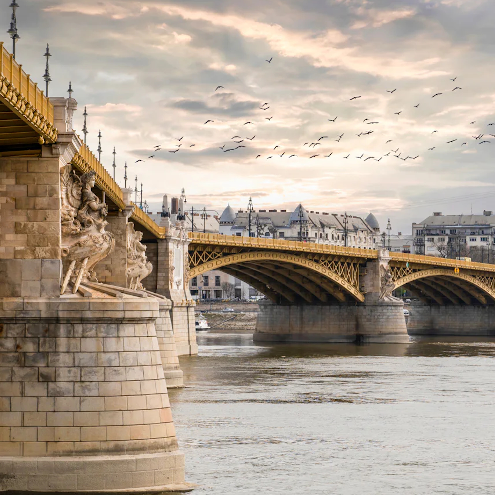

Rome, the Eternal City, is an open-air museum where every stone tells a story. It is a city that has been continuously inhabited for almost three thousand years, and this long history is visible everywhere: in the ruins of the Roman Forum, in the Renaissance palaces, in the Baroque fountains, and in the modern neighbourhoods that surround the historic centre.
Walking through Rome is like flipping through the pages of a history book, but with the sun on your face and the smell of fresh coffee in the air. The Colosseum is the most iconic symbol of the city and the largest amphitheater ever built.
Inaugurated in 80 AD under the emperor Titus, it could hold between 50,000 and 80,000 spectators who came to watch gladiatorial contests, animal hunts, and even mock naval battles. Walking through its arches is like stepping back into the days of the Roman Empire.
Even though it is now partially ruined, the Colosseum still dominates the skyline and leaves visitors speechless. A tip: book your tickets online in advance and visit early in the morning to avoid the crowds and the heat.
No visit to Rome is complete without a stop at the Trevi Fountain. This stunning Baroque masterpiece is the largest fountain in the city, standing 26 metres high and 49 metres wide.
It was designed by Nicola Salvi in the 18th century and is fed by an ancient aqueduct, the Aqua Virgo, which still brings water to the fountain today. Tradition says that if you toss a coin over your left shoulder with your right hand, you will one day return to Rome.
Every year, millions of tourists follow this ritual, and the coins collected from the fountain are donated to charity. The fountain is especially beautiful at night, when it is illuminated and the sound of the water creates a magical atmosphere.
Be careful, though: sitting on the edge of the fountain is now forbidden, and there are strict rules to protect this monument.
Finally, the Pantheon is an architectural marvel that has stood for nearly 2,000 years. Originally built as a temple to all the gods of ancient Rome, it was later converted into a Christian church, which helped it survive through the centuries.
It boasts the world’s largest unreinforced concrete dome, with a diameter of 43.3 metres—a record that has never been beaten. At the top of the dome is an oculus, a circular opening that lets natural light pour in and also serves as a cooling system.
When it rains, water falls directly into the building, but the floor is designed with small holes to drain it away. The Pantheon is also the final resting place of the artist Raphael and of several Italian kings.
Standing under the dome and looking up at the sky is an experience that connects you directly with the genius of Roman engineering.


Budapest, the “Pearl of the Danube,” is a city of two halves—Buda and Pest—each with its own charm. Buda, on the western bank of the river, is hilly and home to the historic castle district, while Pest, on the eastern bank, is flatter and more modern, with wide boulevards, shops, and nightlife.
The two sides are connected by several beautiful bridges, the most famous of which is the Chain Bridge, a symbol of the city. Budapest is also famous for its thermal baths, its ruin bars, and its rich cultural life. It is a city that invites you to slow down, relax, and enjoy its many pleasures.
The Hungarian Parliament Building is one of Europe’s largest and most beautiful parliament buildings. Completed in 1904, it was designed by the architect Imre Steindl in a Gothic Revival style, inspired by the Houses of Parliament in London.
Its golden facade reflecting in the Danube at sunset is a sight you will never forget. The building is 268 metres long and has 691 rooms, and it is still used by the Hungarian government today. Guided tours inside reveal the stunning Golden Hall, the grand staircase, and the Hungarian Crown Jewels, which are guarded by two soldiers day and night.
A tip: book your tour well in advance, as tickets sell out quickly, especially in summer.
For the best panoramic views of the city, head to Fisherman’s Bastion. With its fairy-tale white towers and arcades, it offers the perfect postcard view of the Parliament and the river below.
Despite its name, it was never a real fortress: it was built in the late 19th century as a decorative monument to celebrate the 1,000th anniversary of the Hungarian state. It is especially magical at sunrise, before the crowds arrive, when the light is soft and the city is still quiet.
From its terraces, you can see the Margaret Bridge, the Margaret Island, and the hills of Buda. There is also a small café where you can enjoy a hot chocolate while admiring the view. If you are a photographer, this is one of the best spots in the city for sunrise and sunset shots.
After all that walking, relax in the Széchenyi Thermal Bath, Europe’s largest thermal bath complex. Located in the City Park, it was opened in 1913 and is famous for its neo-Baroque architecture and its outdoor pools filled with warm water from natural hot springs.
The water is rich in minerals and is believed to have healing properties for muscles and joints. The complex has 15 indoor pools, 3 outdoor pools, and several saunas and steam rooms. In summer, the outdoor pools become a popular social spot, where locals and tourists play chess on floating boards or simply relax in the sun.
A visit to the thermal baths is not just a tourist activity; it is a fundamental part of Hungarian culture, dating back to the Roman and Ottoman periods. Be sure to bring a swimsuit, a towel, and a cap for the swimming pool, as they are required.


